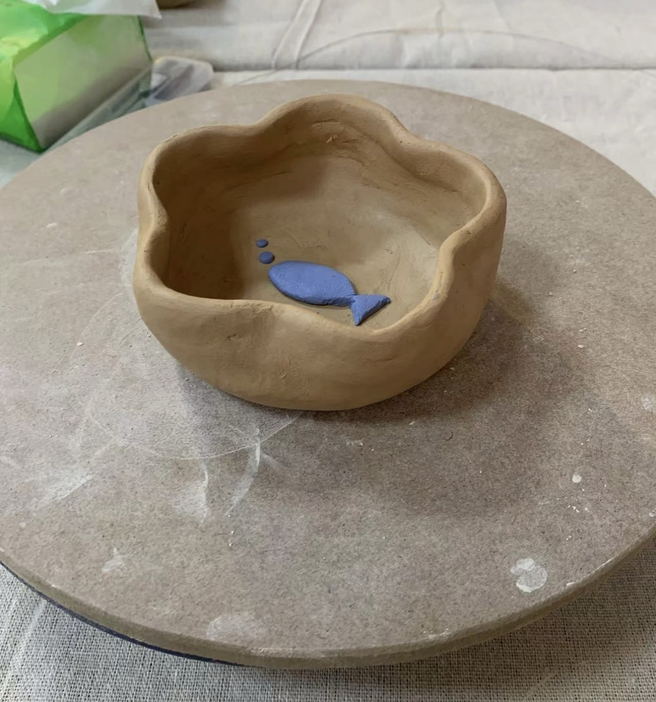
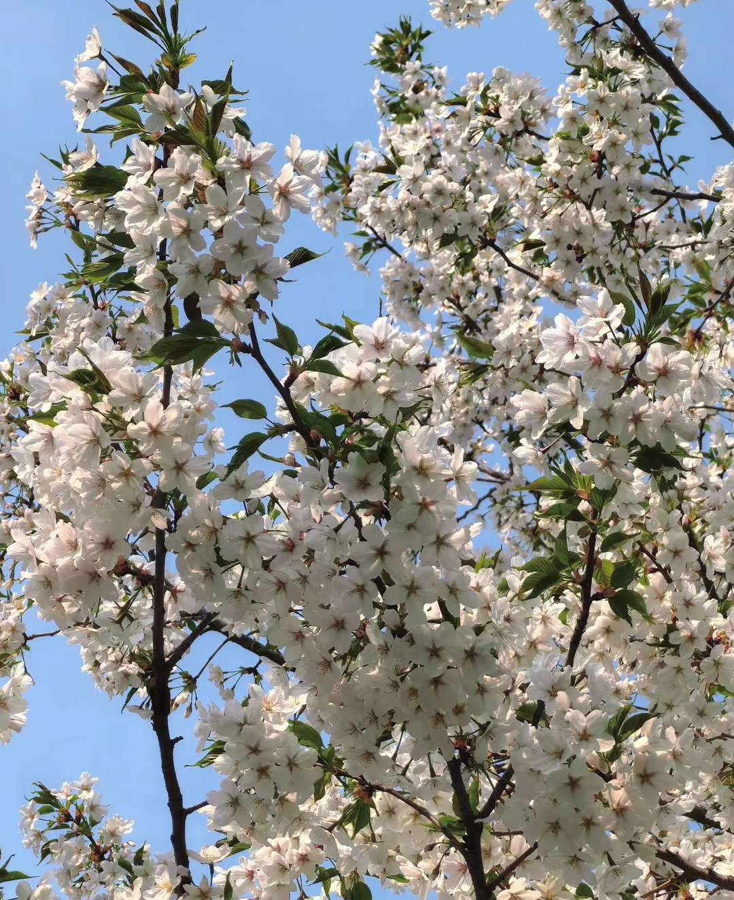
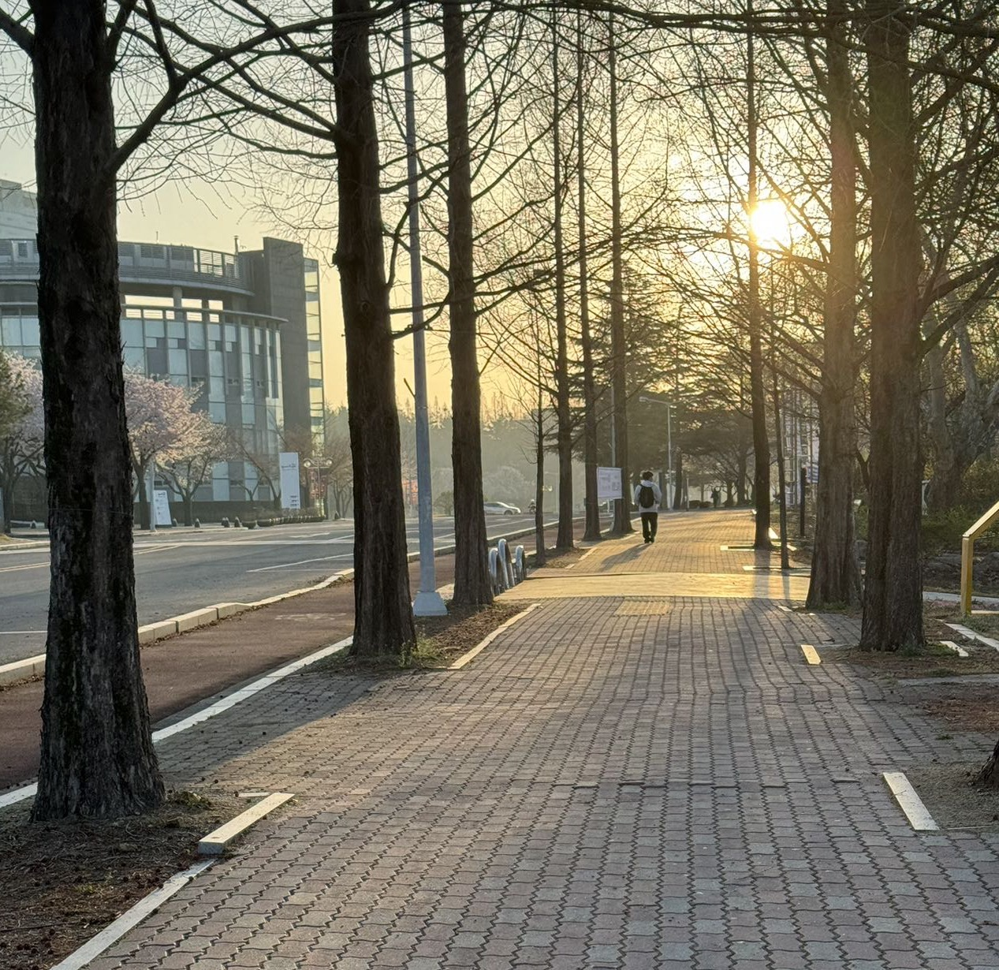
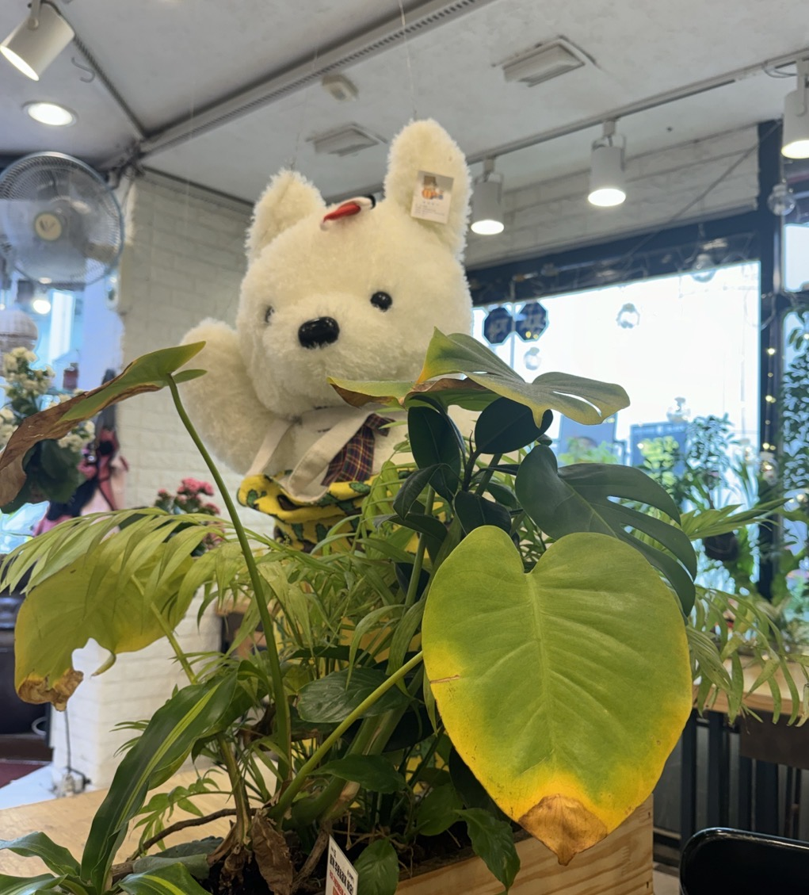
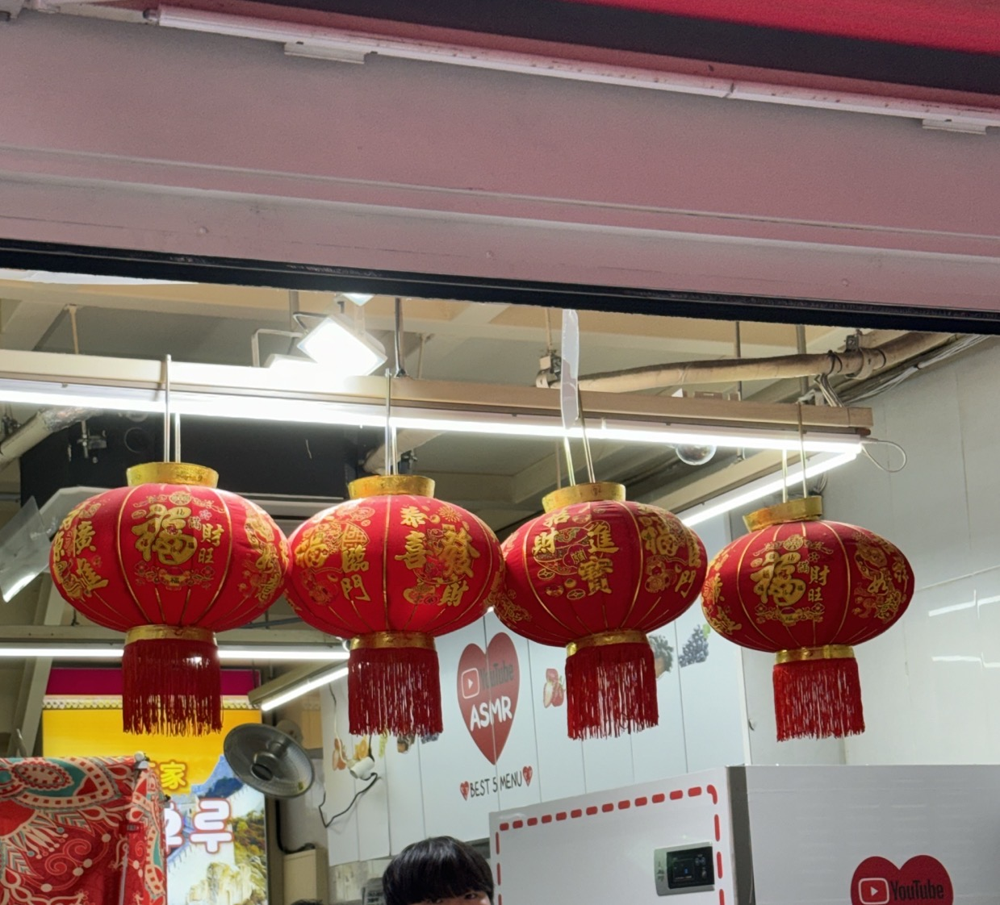
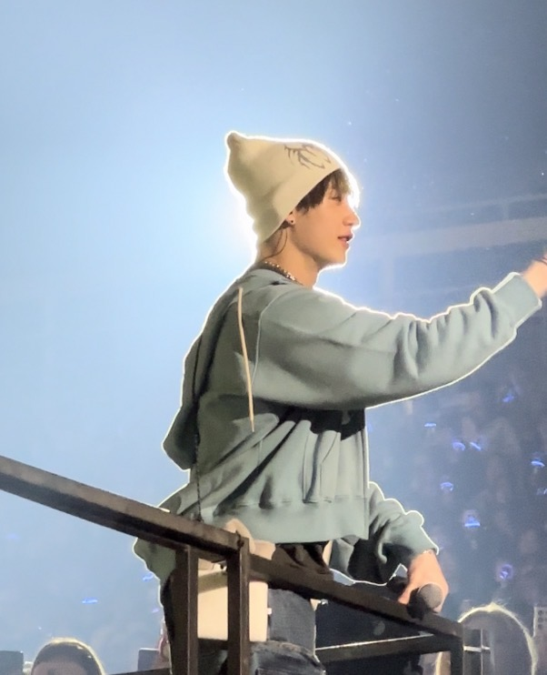
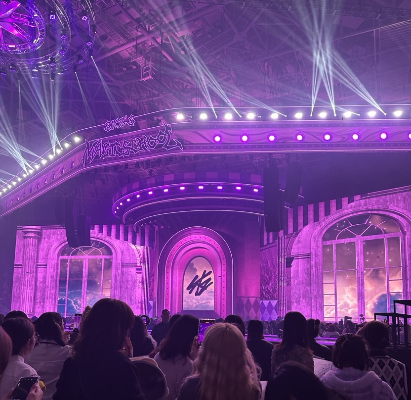
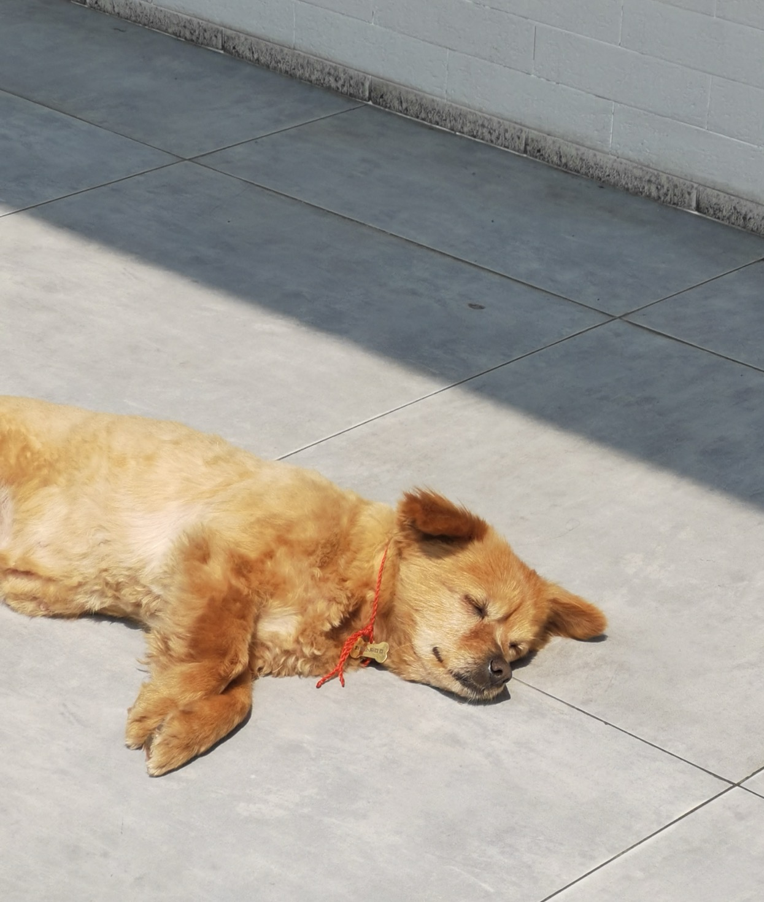
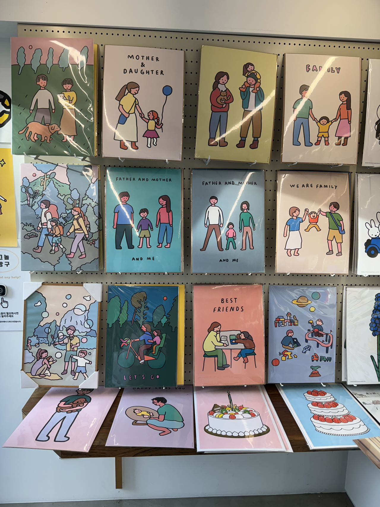
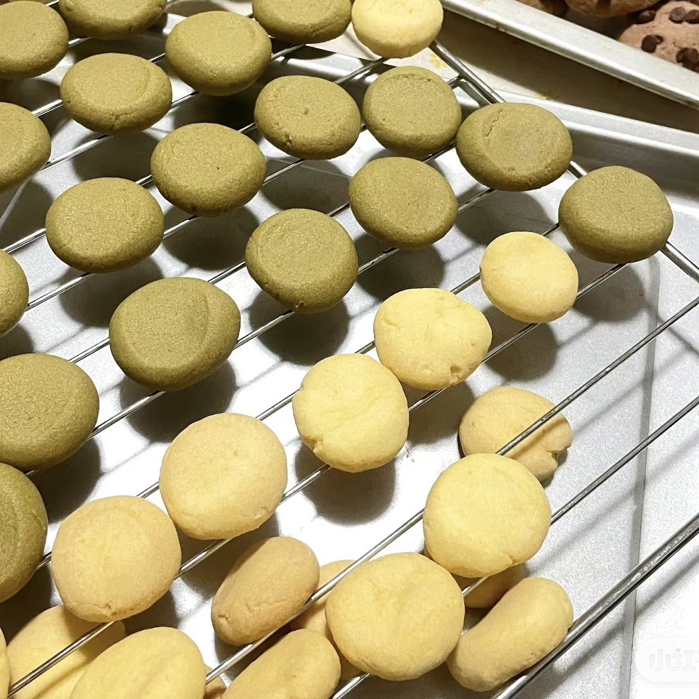

주말에 친구와 함께 도예를 해보았는데 이 작은 그릇을 제가 만들었는데 색다른 시도였습니다.도예 제작이 내게 가장 큰 영향을 준 것은 들뜬 마음을 가라앉히는 것이었다. 나는 원래 꼼꼼한 사람이 아니었지만, 하나의 완전한 작품은 어디에나 있는 디테일을 조합해야 했다. 어느 곳의 부주의도 최종 작품을 덜 완벽하게 보이게 했다. 일련의 과정을 거치면서 보통의 흙이 이렇게 사랑스러운 것으로 변했다는 것이 신기했습니다.
요즘 학교에는 벚꽃이 만개해서 매일 수업이 끝나고 집에 가는 길에 볼 수 있는데, 볼 때마다 기분이 좋아지고, 바람이 불면 꽃잎이 흩날리고, 때로는 은은한 벚꽃향기가 나면서 마음속의 고민과 피로가 위로되고, 벚꽃의 꽃말은 생명과 행복과 희망이 있다는 뜻에서 봄이 왔다는 것을 깨닫고 사진을 찍었는데 정말 예쁜 벚꽃이었습니다.
이번 주 월요일 아침 6시 반의 일출입니다. 일찍 일어나서 사회봉사활동으로 쓰레기를 줍는 것이 매우 짜증납니다. 길을 가다가 고개를 들어 이 광경을 보았습니다. 매일 바쁘게 등교하고 있습니다. 오락은 오랜만에 일찍 일어나서 조용히 일출을 봅니다. 태양의 첫 번째 빛이 구름을 뚫고 대지를 비추는 그 따뜻하고 생기발랄한 느낌은 저를 더없이 편안하고 즐겁게 합니다. 앞으로 제가 자주 볼 수 있기를 바랍니다.
식당가서 밥상옆에 귀여운 곰인형이 놓여있었는데 마치 인사하는것처럼 보였는데 밥먹는것만 봐도 기분이 좋아지고 그릇의 음식도 구수해져서 가게 사장님도 너무 좋고 선물도 많이 주시고 올때마다 얼굴에 웃음꽃이 피어나고 가게주인도 곰인형처럼 귀엽고 옆에 있는 초록식이가 봐도 눈이 편해져서 정말 손님들의 마음을 사로잡습니다.
초롱의 붉은 외피는 상서로운 여운을 의미하며, 금빛 명주실은 아름다운 문양을 그려 눈길을 사로잡습니다.모든 등불은 아름다운 예술품입니다. 어둠 속에서 따뜻한 빛을 발산하고 사람들에게 희망과 용기를 줍니다. 그리고 황금색 글자는 축복을 의미하기도 합니다. 보는 동안 친숙한 친절함과 소속감을 찾았습니다. 그래서 사진을 찍었습니다.
지난 주말 아이돌의 팬미팅에 갔는데 그가 무대에 섰고, 내 시선이 그를 따라 움직였다. 그때 조명이 그의 몸을 비추었다. 그 순간 내가 카메라의 셔터를 누르자 모든 것이 조용해졌다. 그 빛 자체가 빛납니다. 내 눈 속의 그와 무대 위에서 반짝반짝 빛나고, 요정처럼 멀지만 눈앞에 다가왔다. 내가 내 눈 속의 그를 찍을 수 있어서 다행이고, 그 순간의 그는 우리의 다음 만남까지 내 머릿속에 각인될 것입니다.
이게 모든 공연이 끝나는 그 순간인데 공연이 끝날 때까지 정말 꿈만 같았고 끝나면 여러분들이 리본을 모아서 사진을 찍는 등 마지막 장면만 찍으면 되는데 앞으로 다양한 퍼포먼스가 펼쳐질지 모르겠지만 무대를 포함한 모든 순간에는 한계가 있습니다.
지나가면서 강아지들이 조용히 햇볕을 쬐며 잠드는 것을 보면서 관심을 끌었는데, 세월이 고즈넉한 느낌, 시간이 멈춘 듯 느리게 느껴졌고, 마음이 이렇게 평온했던 적이 없었던 편안함이 엊그제 같은데, 우리는 평생을 살아오느라 주변 사물을 등한시하며 살아온 적이 많았습니다. 적당히 쉬어가며 주위를 둘러보면 깜짝 놀랄만한 느낌이었습니다. 예를 들어 이 장면이 기록되어도 저는 오랫동안 치유되었습니다.
문구점 한구석에서 본 약필화, 다양한 장면을 그린 가족들, 간단한 선 몇 개와 색깔 덩어리만으로 이렇게 귀엽고 아늑한 그림을 만들 수 있는 것, 약필화의 매력과 독특함을 느낄 수 있는 것, 이렇게 많은 그림 하나하나가 사랑스럽지만 나는 그들을 모두 가지고 갈 수 없어 핸드폰에 기록할 수밖에 없었습니다.
버터를 부드럽게 하고 슈가파우더와 소금을 넣어 하얗게 체에 쳐서 노른자 1개를 넣고 잘 섞은 후 밀가루, 옥수수 전분을 넣어 반죽한 후 구이판에 넣고 엄지손가락으로 눌러 모양을 만든 후 오븐에 넣고 150도 20분 정도 끓이면 성공한 맛있는 쿠키입니다. 하지만 처음 시도했던 것이 아니라 여러 번의 실패 끝에 가장 성공한 쿠키입니다.
